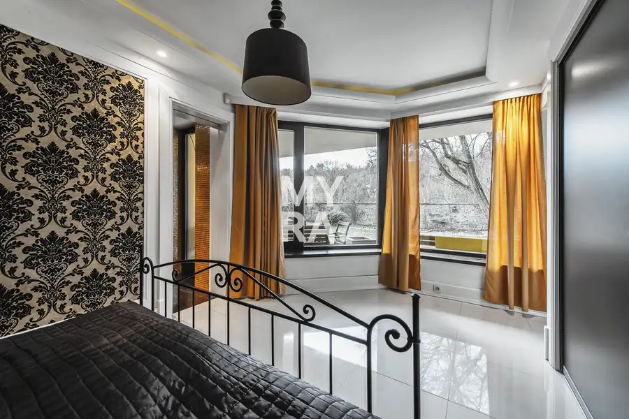
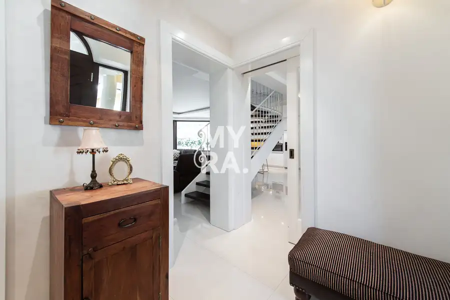
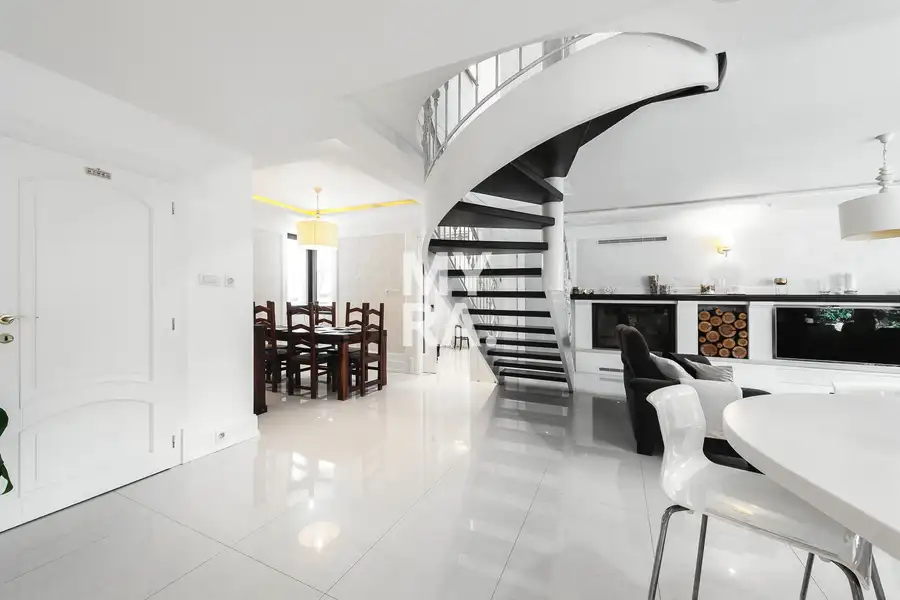
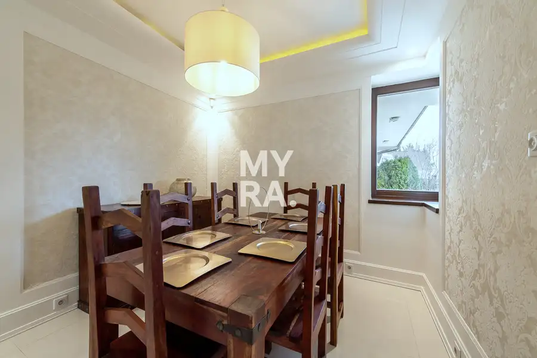

Rodinná vila v rezidenčnej lokalite Botanická, Prešov
Prešov





- Plocha234 m²
- StavKompletná rekonštrukcia
- VlastníctvoOsobné
O nehnuteľnosti
MYRA realitné centrum ponúka exkluzívne reprezentatívnu rodinnú vilu v rezidenčnej lokalite Botanická v meste Prešov, situovanú v pokojnom prostredí pri Kolmanovej záhrade.Nehnuteľnosť spája nadčasovú architektúru, veľkorysý priestor, súkromie a pokojné bývanie v jednej z najvyhľadávanejších častí mesta. Vila je určená pre klienta, ktorý hľadá výnimočné bývanie s dôrazom na kvalitu, komfort a diskrétnu rezidenčnú atmosféru.Základné informácielokalita: Botanická, Prešovpozemok: 895 m²záhrada: 687 m²podlahová plocha domu: cca 240 m²zastavaná plocha: cca 210 m²počet izieb: 7dvojgarážtehlová stavbanízkoenergetické riešeniepodlahové kúrenieterasa a upravená záhradakompletné vybavenieDispozícia a interiérDominantou domu je veľkorysá denná časť s krbom, elegantným schodiskom a modernou kuchyňou prepojenou s jedálenskou časťou.Interiér pôsobí vzdušne, nadčasovo a reprezentatívne. Veľké presklené plochy zabezpečujú dostatok prirodzeného svetla a zároveň príjemné prepojenie interiéru so záhradou.Na prízemí sa nachádza aj súkromná spálňová časť prepojená s kúpeľňou, saunou a výstupom smerom do záhrady. Poschodie ponúka ďalšie izby, kúpeľne a priestor vhodný pre rodinu, prácu z domu alebo hosťov.Dom tak vytvára ideálnu kombináciu rodinného bývania, komfortného súkromia a reprezentatívneho priestoru pre každodenný život.Exteriér a atmosféraSúkromná záhrada s dospelou zeleňou vytvára výnimočnú atmosféru pokoja a intimity priamo v meste.Príjemné posedenia na terase, kontakt so zeleňou a pokojné rezidenčné prostredie ponúkajú bývanie s výnimočnou atmosférou a vysokou mierou súkromia.Technické informácietepelné čerpadlonízkoenergetická prevádzkakvalitné materiály a nadčasové prevedenieveľkoformátové preskleniadvojgarážupravené exteriérykompletné inžinierske sieteLokalitaBotanická patrí medzi najobľúbenejšie rezidenčné lokality mesta Prešov. Lokalita ponúka pokojné bývanie v blízkosti centra mesta, množstvo zelene, minimálny tranzit a výbornú občiansku vybavenosť.Bezprostredná blízkosť Kolmanovej záhrady dodáva tejto nehnuteľnosti jedinečný charakter a výnimočnú atmosféru.Cena: na vyžiadanie v RKBližšie podmienky ponuky sú predmetom individuálneho rokovania.V prípade vážneho záujmu Vám túto nehnuteľnosť a podmienky kúpi rád predstavím aj telefonicky alebo osobne.KontaktIng. Martin PončákMYRA. realitná kanceláriaTkáčska 4, Prešov0903 433 337martin.poncak@myrapoint.skwww.myrapoint.sk
Parametre
- Druh
- Rodinný dom
- Dátum zverejnenia
- 11. 07. 2026
- Dĺžka pozemku
- 33
- Energetická náročnosť
- Nízkoenergetický
- Orientácia
- Juhovýchodná
- Plocha pozemku
- 895 m²
- Počet balkónov
- 1
- Počet garáží
- 2
- Počet izieb / miestností
- 7
- Počet nadzemných podlaží
- 1
- Rok výstavby
- 2015
- Stav nehnuteľnosti
- Kompletná rekonštrukcia
- Telekomunikácie
- Internet, Káblová TV
- Terás
- 1
- Terén pozemku
- Rovinatý
- Typ
- Predaj
- Typ konštrukcie
- Tehlová
- Vlastníctvo
- Osobné
- Vybavenie
- Balkón, Terasa, Garáž, Špajza
- Vykurovanie
- Podlahové, Krb, Klimatizacia
- Zariadenie
- Zariadené kompletne
- Zastavaná plocha
- 208 m²
- Úžitková plocha
- 234 m²
- Šírka pozemku
- 27